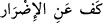
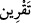
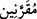

şeklindeki sözleri bizce de haklı ve müsellem bir itirazdır. Fakat âyetteki zincire
vurulma ifâdesi, böyle gerçekten zincire vurulma gibi gayr-i mecâzî bir anlam
taşımamaktadır. Zira şeytanlar Allah’ın boyun eğdirmesi sâyesinde Süleyman’ın (a.s.)
emrine âmâde olup onun zebûnu olunca o da bunları insanlara zarar vermekten alıkoyma
gücüne sâhip olmuştur. Böylece, insanlara zarar vermekten alıkonulmuş olmaları,
‘zincire vurulma’ya teşbih edilerek mezkûr alıkonulma eylemini ifâde etmek üzere (
) masdarı, (
) masdarı yerine isti’âre-i asliyye tarzında emâneten
kullanılmış, sonra da mecâzî anlam olan (
)’den (
) lâfzı türetilmiştir. Ki bu, şer
işlemekten men edilmiş anlamında bir isti’âre-i tebe’iyye’dir.
el-Es’iletü’l-mukhime adlı eserde der ki: Cinler, birtakım cüzlerden müteşekkil
(müellef) gövdeler ve temessül edebilen varlıklardır. Bu gövdelerin latîf ya da kesîf
olup olmadığını açıkça ortaya koyacak hiçbir delil yoktur. Aksine latif de olabilirler
kesif de. Bizim onları göremememizin sebebi ise Mu’tezile’nin iddiâ ettiği gibi cinlerin
latîf olması değil, Allah Teâlâ’nın, bizde onları görebilecek bir algı yaratmamış
olmasıdır.
Kadı Ebû Bekr (Bâkıllânî) şöyle der: Cinlerin yaratılışına esas teşkil eden madde
ateştir. Böyle olmakla birlikte biz, Allah’ın onları kesâfet/yoğunluk sâhibi varlıklara
dönüştürüp gövdelerini elle tutulur şeyler hâline getirebileceği, ateş üzerine zâid
birtakım ârazlar daha yaratabileceği, onların da bu sâyede ateşlikten çıkabileceği ve
ayrıca onları çeşitli şekil ve sûretlerde yaratabileceği fikrini inkâr ediyor değiliz.
Dolayısıyla tıpkı Allah’ın, bunların gövdelerini kesifleştirmesi durumunda olduğu gibi
bizim görme gücümüzü artırması durumunda da bunları görmemiz mümkün olacaktır.
Kadı Abdü’l-Cebbâr da Akâmü’l-mercân fî-hükmi’l-cânn adlı eserde şöyle der:
Cenab-ı Hak şeytanları Süleyman (a.s.) için kesifleştirmiş, insanlar da onları
görebilmeye başlamış, ne kadar güçlü olduklarını anlamıştı. Bunlar zorlu işlerin bile
üstesinden gelebiliyorlardı. Zincire vurulan bir şey, mutlaka yoğunluklu (kesîf) bir cisim
olur. Ancak bunların peygamberlerin yaşadığı zamanların haricinde işe koşulmaları ve
kesifleştirilmeleri mümkün olmaz, zira böyle bir şey yürürlükte olan tabiat kanunlarının
altüst olmasına yol açar.
Bazı âlimler de şeytanların Süleyman (a.s.) devrinde gözle görülmekte iken, onun
vefatıyla Allah’ın bunları öldürüp yerlerine son derece rakîk ve latif başka şeytan
türleri getirmiş olduğunu söylemiştir. Bu görüşe, “şeytanların mühletli oldukları
gerçeği’ hatırlatılarak, bunlar nasıl ölebilir?” diye karşı çıkılabilir. Ancak mezkûr
mühletin sadece İblîs’e verildiği yahut da buradaki şeytanlardan maksadın kâfir cinler
olduğu söylenerek buna cevap verilebilir. Çünkü onlar da yoldan çıkmış (mâridûn)
bulunmaktadır.
Rivâyet edilir ki: Allah Teâlâ, Süleyman’dan önceki hiçbir hükümdara boyun
eğdirmediği şeyleri yâni rüzgârları, şeytanları ve kuşları kendisine boyun eğdirmek ve
kendisinden önce hiç kimseye nasip olmamış oranda kral ve hükümdarı emri altına